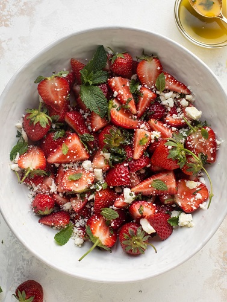
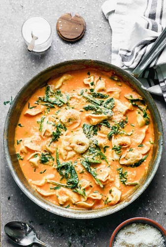
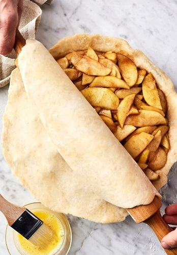
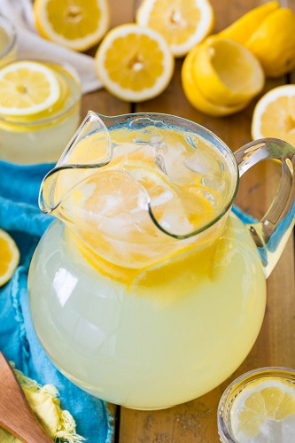

Strawberry Feta Tossed Salad
Ingredients:
- 6 cups torn mixed salad greens
- 2 cups fresh strawberries, sliced
- 1 package (4 ounces) crumbled feta cheese
- 1/4 cup sunflower kernels
- Balsamic vinaigrette
Instructions
- Place first 4 ingredients in a large bowl.
- To serve, drizzle with vinaigrette; toss to combine.

Roasted Red Pepper Pasta
Ingredients:
- 1 16-ounce jar roasted red peppers, drained
(about 7 peppers, 2 cups sliced) - 1 cup unsweetened almond milk
- ¾ cup fresh basil leaves, plus more for garnish
- 6 oil-packed sun-dried tomatoes, about 3 tablespoons chopped
- 3 tablespoons extra-virgin olive oil
- 1 tablespoon fresh lemon juice, plus more to taste
- 2 garlic cloves
- ½ teaspoon smoked paprika
- ¼ teaspoon sea salt, plus more to taste
- 12 ounces rigatoni pasta
- ¼ cup grated Parmesan cheese, plus shavings for serving
- Pine nuts, for serving
- Red pepper flakes, for serving
Instructions
- Place first 4 ingredients in a large bowl.
- In a blender, place the red peppers, almond milk, basil, sun-dried tomatoes, olive oil, lemon juice, garlic, paprika, and salt. Blend until creamy.
- Bring a large pot of salted water to a boil. Cook the pasta for 10 minutes, approximately 3 to 5 minutes shy of al dente. It will finish cooking in the sauce.
- Heat a large, deep skillet over medium heat and add the sauce. Stir in the pasta. Cook, stirring, over low heat for 3 to 5 minutes, or until the sauce thickens and the pasta is al dente. Add the grated Parmesan and stir until it melts into the sauce. Remove from the heat.
- Season to taste with more salt and lemon juice as desired. Top with basil, Parmesan shavings, pine nuts, and red pepper flakes and serve.

Apple Pie Filling
Ingredients:
- ⅓ cup packed brown sugar
- ⅓ cup cane sugar
- 1 tablespoon Apple Pie Spice
- ¼ teaspoon sea salt
- 4 pounds good baking apples, such as Granny Smith or Honeycrisp, peeled, cored, and thinly sliced
- 1 tablespoon fresh lemon juice
- 2 tablespoons cornstarch
- 2 tablespoons water
- ½ teaspoon lemon zest
- ½ teaspoon vanilla extract
Instructions
- In a large pot, whisk together the brown sugar, cane sugar, apple pie spice, and salt. Add the apple slices and lemon juice and toss until the apples are evenly coated in the sugar and spices. Set aside for 30 minutes to draw some of the juices out of the apples.
- In a small bowl, stir together the cornstarch and water until smooth.
- Set the pot with the apples over medium-low heat. Cook, stirring, until the apples soften slightly, about 5 minutes*. Raise the heat to medium and pour the cornstarch mixture over the apples. Cook, stirring, until the apple juices bubble and thicken, about 30 seconds. Remove from the heat and stir in the lemon zest and vanilla.
- Allow the filling to cool completely before using in a pie, or serve warm with vanilla ice cream.

Homemade Lemonade
Ingredients:
- 1 1/2 cup granulated sugar
- 1 cup water, (cold), plus 7 cups to serve
- 1 1/2 cups Lemon Juice
(from 8 medium or 6 large lemons)
Instructions
- In a small saucepan, combine 1 cup water with 1 1/2 cups sugar. Place over medium heat and bring just to a simmer, stirring to dissolve the sugar. Remove from the heat and let the syrup cool to room temperature. Transfer to a mason jar, cover and refrigerate until ready serving.
- Squeeze 1 1/2 cups lemon juice. Transfer to a mason jar and refrigerate up to 2 weeks until ready to make lemonade.
- To make the full batch of lemonade, pour 7 cups cold water into a pitcher, add the 1 1/2 cups of lemon juice and 1 1/2 cups chilled sugar syrup and stir to combine. You can also add the lemon juice and sugar syrup to taste. Add ice to glasses when serving.